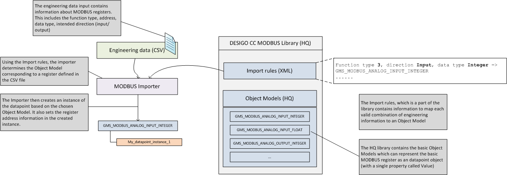
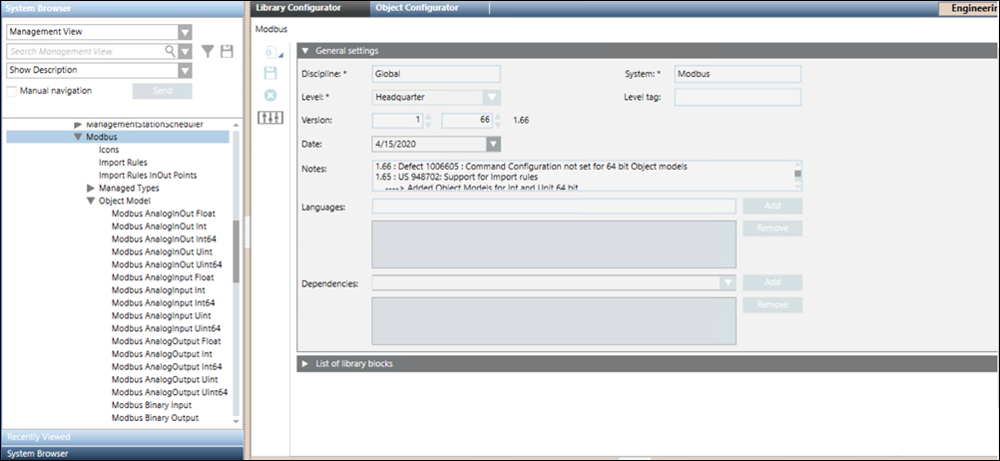

Standard Object Models Representing Data Points
The key Modbus data point types map to analog or digital property types, which are either read-only or read-write. The following table shows this simplified classification.
Function Code | Address Range |
Coil (Discrete Output) | 00001 - 09999 |
Discrete Input | 10001 - 19999 |
Input Register | 30001 - 39999 |
Holding Register | 40001 - 49999 |
The Holding register (function type 3) and Input register (function type 4) can contain data, which is an integer/long, unsigned integer/long, or int/double. Therefore, the mapping of these registers and data point types to an equivalent management station object model needs information input from the user. This information is contained in the engineering data. This information is combined (by the Importer) with information contained in the Import Rules to decide which object model must be used to create the representation of a register.

Standard Modbus object models are located at the following location Management View > System Settings > Libraries > L1-Headquarter > Global > Modbus.
